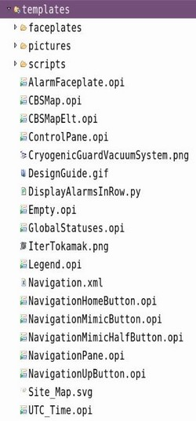
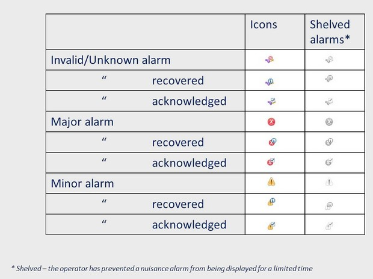

- Integration of CSS 4.2.0 official release:
In this release CSS menu has been changed to CS-Studio:
- Implemented Auto-Complete support for ca JSON extension:
$ css-dbmanager -help
Usage:
css-dbmanager -list | -save | -restore -file my_backup_file -rdb_name dbname [-from t1] [-to t2]
[-rdb_user user] [-rdb_host host] [-rdb_url url]
Options:
-help show Help
-version show version
-list list available databases, then exit
-save save database (to be used with the option -file)
-restore clean and restore database (to be used with the option -file)
-file my_backup_file dump file name (.zip extension is added automatically)
-rdb_name name database name to save or restore (such as css_archive_3_0_0)
-from "yyyy-mm-dd hh24:mi:ss" time of the first entry (time must be between quotes)
-to "yyyy-mm-dd hh24:mi:ss" time of the last entry (time must be between quotes)
-rdb_user user database username (such as archive)
-rdb_host host database server host (by default localhost)
-rdb_url url database url (by default jdbc:postgresql)
-verbose verbose mode
-format plain|custom PG dump/restore format (by default plain)
The keyword 'all' can be used after -save or -restore to target all databases instead of specifying -rdb_name.
In that case, -file option is not required.
Example:
css-dbmanager -save all -from "2015-01-01 00:00:00" -to "2015-06-01 17:00:00"
When validation completes, a validation results dialog is displayed, and any problems found will be shown in the Problems view.
To open the Problems view, select Problems from the menu bar Window -> Show View -> Other... -> General -> Problems.
Double-clicking on an error/warning/info message in this view opens the respective editor (OPI Editor or OPI Runtime) and highlights the failing widget. Finally, from the Problems view, fixes can be applied on one or many error/warning messages by invoking the "Quick fix" context menu item. A confirmation is asked for making a backup before applying the fix. After the quick fix is completed, the modified OPI files are revalidated.


Note: the use of mono-space font could impact the layout of existing OPI files. Manual adjustments could be required to align text widgets with other widgets.
- Alarm acknowledgement tick box
- Alarm priority icons
 - The alarm priority symbol is flashing at 2Hz until acknowledged by the operator
- Multiple alarm table views can be opened at the same time
- New view menu
- Alarm table layout for ITER with Alarm Action as the first
guidance description and Alarm ID as the first guidance title